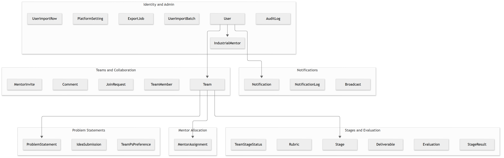
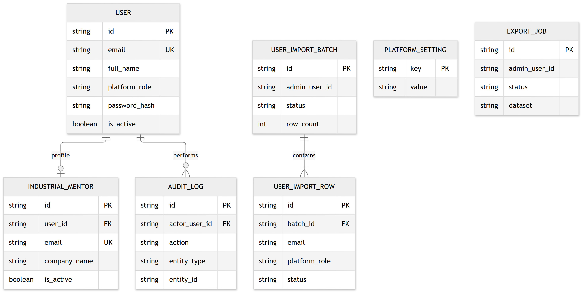
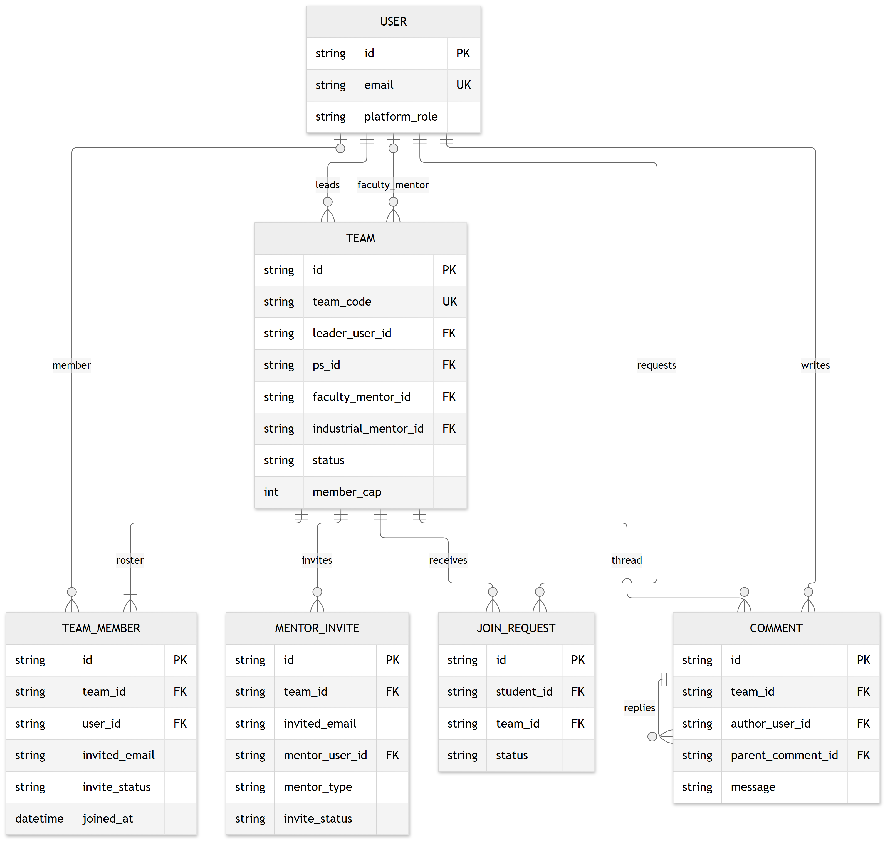
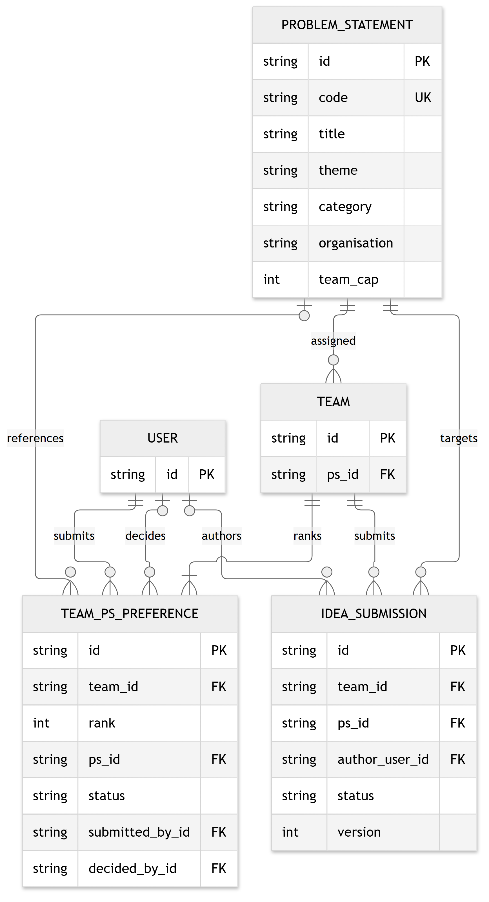
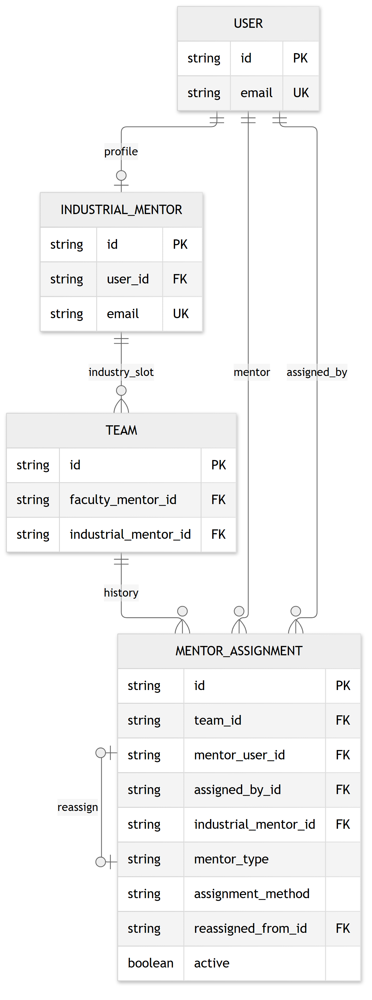
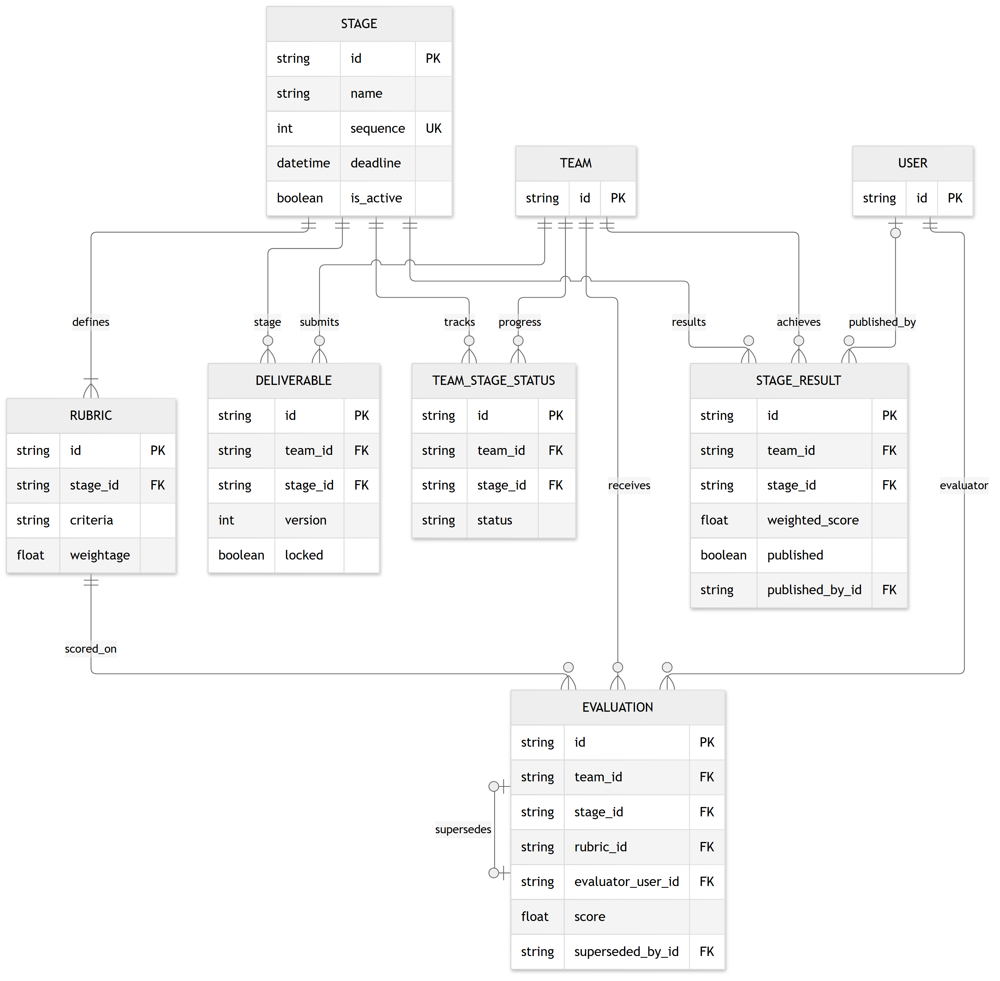
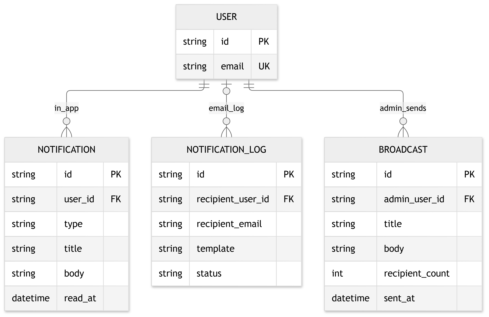
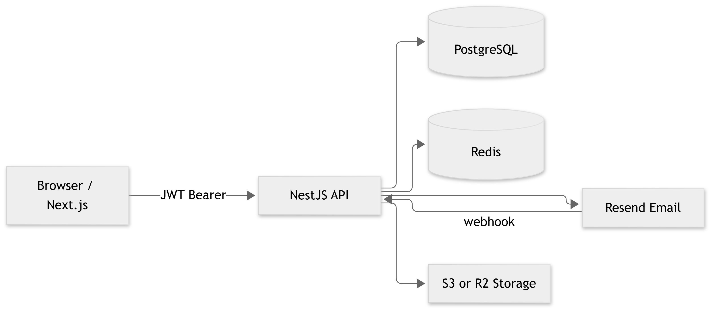

team_code; users authenticate with email + password/OTP and app-issued JWT.
Six bounded contexts: identity, teams, problem statements, mentors, competition stages, and notifications.

Roles: student, institute_mentor, industry_mentor, admin, student_expert. Auth uses password_hash + JWT (no external identity provider).

Teams identified by team_code. Invites tracked in team_members and mentor_invites; email via Resend.

Teams rank PS choices; mentors approve. idea_submissions hold draft/locked ideas per team.

mentor_assignments is the audit trail; faculty and industry mentor slots are denormalized on teams.

Team × stage progress via team_stage_status, deliverables, evaluations, and published stage_results.

In-app notifications plus notification_log for email delivery tracking.

Not stored in PostgreSQL: Redis (OTP, queues), Resend (email), S3/R2 (files).

| # | Table | Purpose |
|---|---|---|
| 1 | users | Accounts, roles, credentials |
| 2 | teams | SIH squads |
| 3 | team_members | Roster and email invites |
| 4 | industrial_mentors | Industry mentor profiles |
| 5 | problem_statements | Official PS catalog |
| 6 | team_ps_preferences | Ranked PS choices |
| 7 | idea_submissions | Team idea drafts |
| 8 | join_requests | Student join requests |
| 9 | mentor_assignments | Mentor allocation history |
| 10 | mentor_invites | Team to mentor invites |
| 11 | stages | Competition milestones |
| 12 | rubrics | Scoring criteria |
| 13 | deliverables | Stage uploads |
| 14 | team_stage_status | Per-team stage progress |
| 15 | evaluations | Mentor scores |
| 16 | stage_results | Published results |
| 17 | comments | Team threads |
| 18 | notifications | In-app alerts |
| 19 | notification_log | Email delivery log |
| 20 | broadcasts | Admin broadcasts |
| 21 | audit_log | Change history |
| 22 | export_jobs | Data exports |
| 23 | platform_settings | Runtime config |
| 24 | user_import_batches | Bulk import batches |
| 25 | user_import_rows | Import batch rows |
| From | To | Card. | FK / notes |
|---|---|---|---|
| User | Team | 1:N | leader_user_id |
| User | Team | 0:1 | faculty_mentor_id |
| IndustrialMentor | Team | 0:1 | industrial_mentor_id |
| Team | TeamMember | 1:N | unique team_id + invited_email |
| Team | ProblemStatement | N:1 | ps_id optional |
| Team | Stage | N:M | via junction tables |
| MentorAssignment | MentorAssignment | chain | reassigned_from_id |